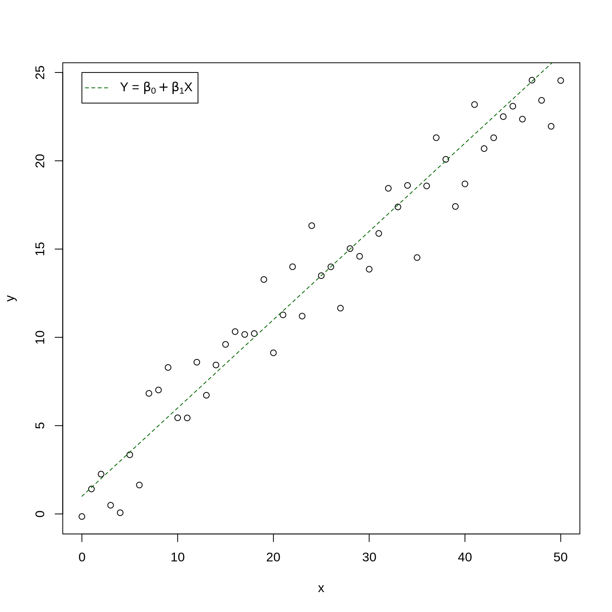

Chapter 3 Reviewing linear models
Much of our research focuses on investigating how patterns we observe can be explained by predictive variables.
We are often looking for a function \(f\) that can explain a response variable ( \(Y\) ) in terms of one ( \(X_1\) ) or many other predictors ( \(X_2\), \(X_3\), \(...\) , \(X_n\) ):
\[Y = f(X_1)\] The combination of predictive variables we have sampled will never fully explain \(Y\). Because of this, there is always unpredictable disturbance in our models, i.e. the error \(\epsilon\). As such, the error is an irrevocable part of our function:
\[Y = f(X_1, \epsilon)\] In Workshop 4, we have learned how to use general linear models as \(f(\cdot)\) to describe the relationship between variables. They were: the \(t\)-test, the analysis of variance (or, ANOVA), the linear regression (both simple, with one predictor, and multiple, with more than one predictor), and the analysis of covariance (ANCOVA).
3.1 General linear models
3.1.1 Definition
The general form of our function \(Y = f(X_1)\) as a linear function can be represented by:
\[Y = \beta_0 + \beta_1X_i + \varepsilon\]
where:
\(Y_i\) is thepredicted value of a response variable
\(\beta_0\) is the unknown coefficient intercept
\(\beta_1\) is the unknown coefficient slope
\(X_i\) is the value for the explanatory variable
\(\varepsilon_i\) is the model residual drawn from a normal distribution with a varying mean but a constant variance.
3.1.2 Assumptions
Linear models only produce unbiased estimators (i.e. are only reliable) if they follow certain assumptions. Most importantly:
1. The population can be described by a linear relationship:
\[Y = \beta_0 + \beta_1X_i + \varepsilon\]
2. The error term \(\varepsilon\) has the same variance given any value of the explanatory variable (i.e. homoskedasticity), and the error terms are not correlated across observations (i.e. no autocorrelation):
\[\mathbb{V}{\rm ar} (\epsilon_i | \mathbf{X} ) = \sigma^2_\epsilon,\ \forall i = 1,..,N\] and,
\[\mathbb{C}{\rm ov} (\epsilon_i, \epsilon_j) = 0,\ i \neq j\]
3. And, the residuals are normal:
\[\boldsymbol{\varepsilon} | \mathbf{X} \sim \mathcal{N} \left( \mathbf{0}, \sigma^2_\epsilon \mathbf{I} \right)\]
